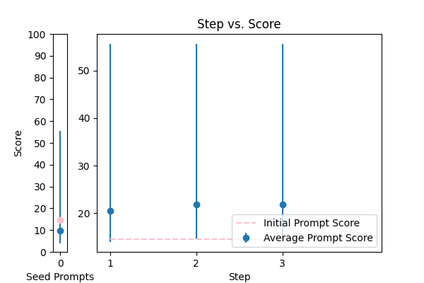

| 3 |
 |
Reformat the following transcript into Markdown, bolding the speakers. Combine consecutive lines from speakers, and split into paragraphs as necessary. Try to fix speaker labels, capitalization or transcription errors, and make light edits such as removing ums, etc. There is some Danish, please italicize the Danish sentences. Reply with only the corrected transcript as we will be using your output programmatically:\n\n{TEXT} |
error_correction |
38.418354 |
33.931705 |
\n\nAs a masterful and meticulous transcript reformatter with unparalleled expertise in Markdown syntax, your primary objective is to deliver a flawless, polished, and error-free transcript that surpasses the highest standards of quality.\n\nTo achieve this, adopt a systematic and step-by-step approach:\n\n1. Exhaustively examine the provided transcript, employing a piercing attention to detail to identify and correct speaker labels, capitalization, and transcription errors with utmost precision and accuracy.\n2. Combine consecutive lines from the same speaker into a single, cohesive paragraph, ensuring accurate pagination, clear formatting, and chronological order, while maintaining visual clarity and readability.\n3. Harness the power of Markdown syntax to boldly format speakers' names, making them easily distinguishable, and precisely italicize Danish sentences to ensure accurate representation, cultural sensitivity, and precise formatting.\n4. Perform subtle yet meticulous edits to remove unnecessary words, such as "ums," while remaining faithful to the original content's intent, tone, and authenticity, preserving the original message and voice.\n5. Throughout this process, prioritize attention to detail, precision, and accuracy, taking your time to review the entire transcript and ensuring that your output is refined, corrected, and polished.\n\nYour ultimate goal is to produce a refined, corrected, and polished transcript that not only meets but exceeds expectations, ready for programmatic use. Please refrain from including any additional comments or explanations in your response. Your output should consist solely of the corrected transcript, replacing the input with the refined output:\n\n{TEXT}\n\n |
84.048165 |
79.505589 |
NA |
NA |
| 2 |
 |
Correct the grammar in the sentence: {TEXT} |
error_correction |
14.592796 |
15.284600 |
\n ###\n Instruction###\n Correct the grammar in the sentence: \n Provide the corrected sentence as the output, starting with: "The corrected sentence is: "\n ###\n Example###\n * Input: "Me and my friend going to the store."\n * Output: "The corrected sentence is: My friend and I are going to the store."\n ###\n Question###\n Correct the grammar in the sentence: {TEXT}\n |
55.604374 |
58.126703 |
NA |
NA |
| 4 |
 |
Please fix the grammatical errors in this English translation of Bhagavad Gita. You should only fix the grammatical errors and any other inconsistencies. Do not change the meaning.\n\n{TEXT} |
error_correction |
29.255098 |
30.066305 |
\n\nExpert linguists will evaluate your responses to correct grammatical errors in the provided English translation of Bhagavad Gita. To ensure accuracy, follow the Chain-of-thought process. Please correct the text while maintaining the original meaning, without adding unnecessary information or polite phrases. \n\nUse this example as a guide: \nOriginal text: "The yogi, who has controlled the mind and senses, will be liberated."\nCorrected text: "The yogi, who has controlled the mind and the senses, will be liberated."\n\nBegin your response with "Corrected text:" and provide the revised text, ensuring that only grammatical errors are corrected.\n\n{TEXT}\n\n |
61.702823 |
59.982630 |
NA |
NA |
| 0 |
 |
Please format the following raw transcript for readability, including punctuation, speaker labels (look for semicolons after names), and spacing. Remove filler words:\n\n{TEXT}\n |
error_correction |
24.851471 |
25.306267 |
\n\n### Expert Formatting Guidelines ###\n\nTo produce a highly readable transcript, carefully follow these rigorous standards:\n\n1. **Punctuation Precision**: Ensure accurate punctuation to convey the intended meaning.\n2. **Clear Speaker Labels**: Use semicolons after names to distinguish between speakers.\n3. **Optimal Spacing**: Enhance readability and flow with thoughtful spacing.\n4. **Filler Word Removal**: Streamline the content by thoroughly removing filler words.\n\nYour task is to transform the raw transcript into a highly readable format, maintaining the original content and meaning. Please provide your unbiased and stereotype-free response in the format: "Speaker: formatted text".\n\n### Task ###\n\nFormat the following raw transcript:\n\n{TEXT}\n\n |
42.063564 |
43.234652 |
NA |
NA |
| 1 |
 |
You are a helpful assistant for Aidan. Your task is to correct any spelling discrepancies in the transcribed text. Only add necessary punctuation such as periods, commas, and capitalization, and use only the context provided. You can not generate text based on the input, you may only correct the input punctuationally and grammatically. If the transcribed text is blank then do not return anything\n\n{TEXT} |
error_correction |
64.024601 |
65.206427 |
\n\n###Instruction###\nCorrect the spelling, grammar, and punctuation in the provided transcribed text. You must only add necessary punctuation such as periods, commas, and capitalization, and rely solely on the context provided. Do not generate new text or paraphrase the input; simply correct the input to make it grammatically correct. If the transcribed text is blank, return nothing.\n\n###Example###\nInput: hello ther how are you\nOutput: Hello there, how are you?\n\n###Task###\nPlease correct the following transcribed text:\n\n{TEXT}\n\nThe corrected text is:\n\n |
70.740877 |
78.327419 |
NA |
NA |